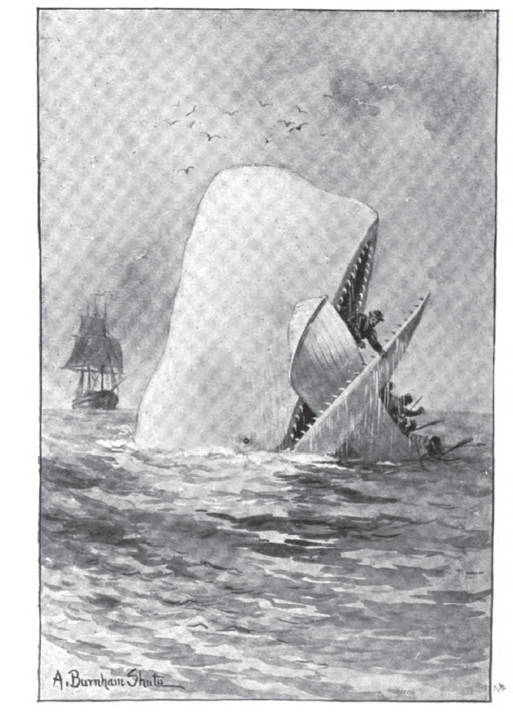

About

- Title
- Moby-Dick
- Author
- Herman Melville
- Date
- 2012-01-13T01:13:00Z
Accessibility
The publisher's accessibility information for the original EPUB.
Ways of reading
- No information about appearance modifiability is available
- No information about nonvisual reading is available
Conformance
- No information is available
Source EPUB
moby-dick; identifier: urn:isbn:9780316000000; converter 1.0.0. Keep the source EPUB for future reconversion. The metadata below describes that EPUB.
- title
- Moby-Dick
- creator (aut)
- Herman Melville
- identifier
- urn:isbn:9780316000000
- language
- en-US
- publisher
- Harper & Brothers, Publishers
- contributor (mrk)
- Dave Cramer
Original EPUB metadata
<metadata xmlns="http://www.idpf.org/2007/opf" xmlns:dc="http://purl.org/dc/elements/1.1/">
<dc:title id="title">Moby-Dick</dc:title>
<meta refines="#title" property="title-type">main</meta>
<dc:creator id="creator">Herman Melville</dc:creator>
<meta refines="#creator" property="file-as">MELVILLE, HERMAN</meta>
<meta refines="#creator" property="role" scheme="marc:relators">aut</meta>
<dc:identifier id="pub-id">urn:isbn:9780316000000</dc:identifier>
<meta refines="#pub-id" property="identifier-type" scheme="onix:codelist5">15</meta>
<dc:language>en-US</dc:language>
<meta property="dcterms:modified">2012-01-13T01:13:00Z</meta>
<dc:publisher>Harper & Brothers, Publishers</dc:publisher>
<dc:contributor id="contrib1">Dave Cramer</dc:contributor>
<meta refines="#contrib1" property="role" scheme="marc:relators">mrk</meta>
<!--MEDIA OVERLAY METADATA-->
<meta property="media:duration" refines="#chapter_001_overlay">0:14:20.500</meta>
<meta property="media:duration" refines="#chapter_002_overlay">0:09:03.000</meta>
<meta property="media:duration">0:23:23.500</meta>
<meta property="media:narrator">Stuart Wills</meta>
<meta property="media:active-class">-epub-media-overlay-active</meta>
</metadata>